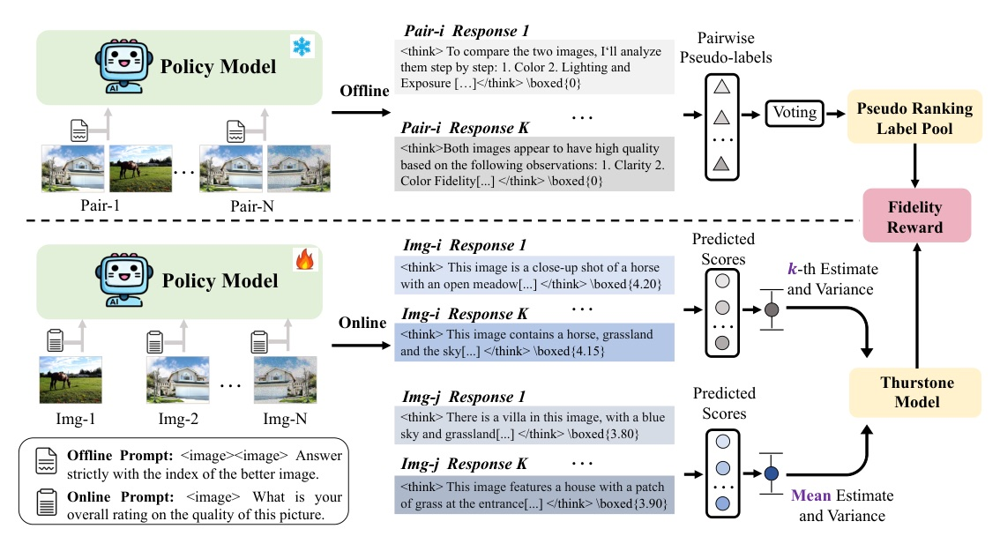
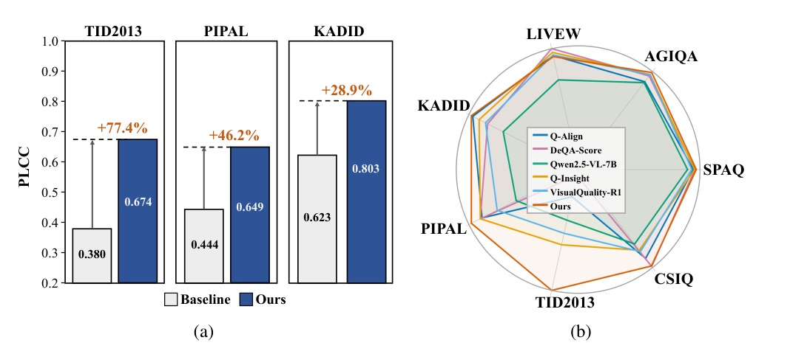
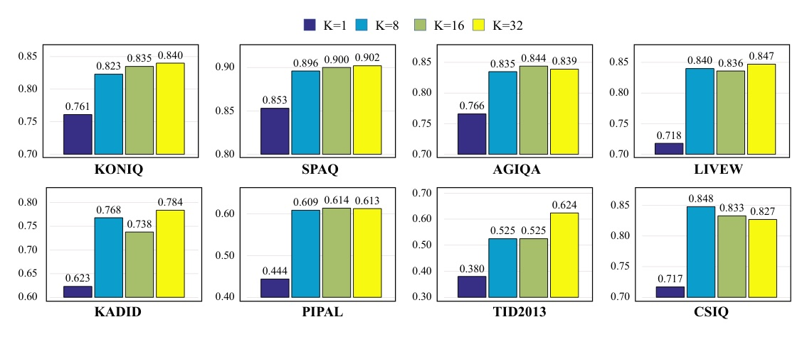

無 human quality labels：用 VLM 自己的投票共識，訓練出能評估影像品質的 ranking policy。
把「哪張比較好」的共識，變成「這次更新是否更可靠」的 reward。
REGRESSION
RANKING

Reward 的 teacher 不是 label；是「多次相對判斷後，模型自己最一致的版本」。
| Item | Value | Why it matters |
|---|---|---|
| Round 1 | KONIQ authentic pairs | 建立初步 relative quality signal |
| Round 2 | adds synthetic images | 擴大 synthetic distortion coverage |
| Offline / online sampling | K = 32 | 為 voting 與 group reward 提供多樣 samples |
| Compute | 8× A100; ~12h / epoch | 不是零成本的 self-evolution |
| Model | WAVG PLCC | WAVG SRCC |
|---|---|---|
| Qwen2.5-VL-7B | 0.615 | 0.570 |
| EvoQuality Round 1 | 0.751 (+27.4%) | 0.709 (+29.6%) |
| EvoQuality Round 2 | 0.770 (+31.8%) | 0.726 (+33.7%) |

| Dataset | Baseline PLCC | Round 2 PLCC |
|---|---|---|
| TID2013 | 0.380 | 0.674 (+77.4%) |
| PIPAL | 0.444 | 0.649 (+46.2%) |
| KADID | 0.623 | 0.803 (+28.9%) |
| CSIQ | 0.717 | 0.865 (+20.6%) |
| Method | OOD WAVG PLCC | OOD WAVG SRCC |
|---|---|---|
| VisualQuality-R1 | 0.722 | 0.666 |
| EvoQuality | 0.727 | 0.678 |
| VQ-R1 + EvoQuality | 0.768 | 0.716 |
Pairwise ranking 是這篇真正的 inductive bias。
| Variant | Round 1 WAVG PLCC | Round 2 WAVG PLCC |
|---|---|---|
| EvoQuality (ranking) | 0.751 | 0.770 |
| EvoEstimate (direct score) | 0.738 | 0.736 |

It generates pseudo-labels by performing pairwise majority voting on the VLM’s own outputs to establish a consensus on relative quality.
它對 VLM 自己的輸出進行成對多數投票，建立對「相對品質」的共識 pseudo-label。Abstract p.1
This set of definitive pairwise outcomes, derived purely from the model’s internal consensus, completely replaces the need for external human mean opinion score (MOS) labels.
這組完全由模型內部共識得出的成對結果，取代了外部人類 MOS 標籤的需求。§3.1 p.5
Self-consistency becomes useful for perception only after it respects the task’s ranking structure.